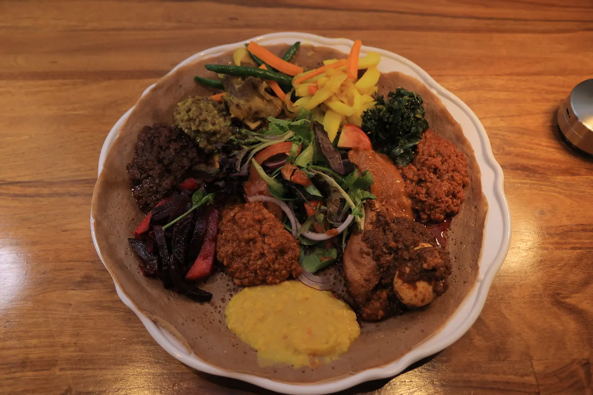
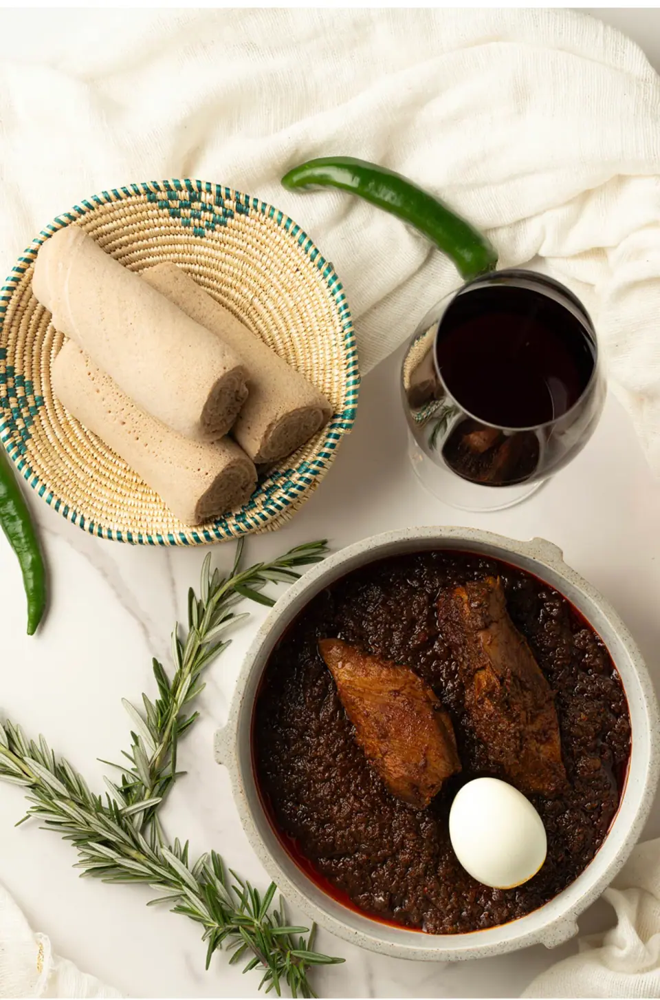
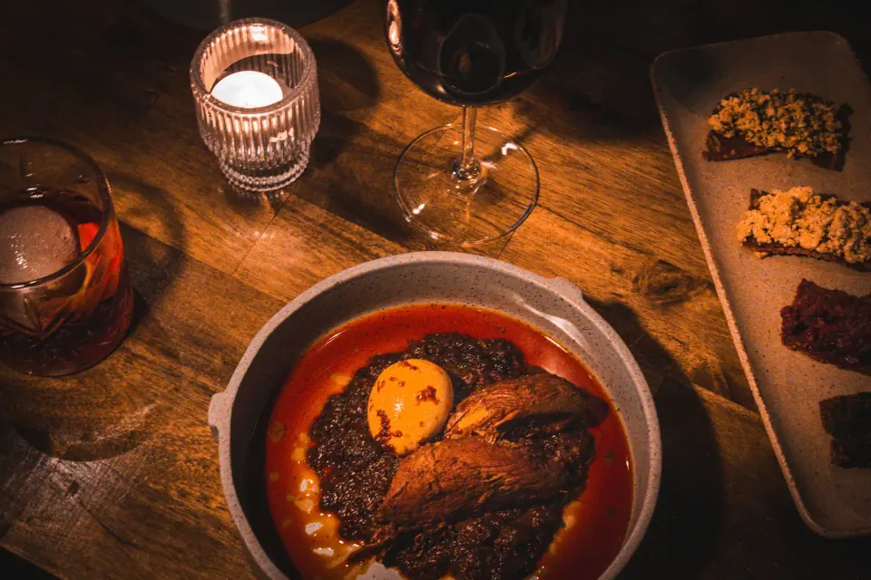
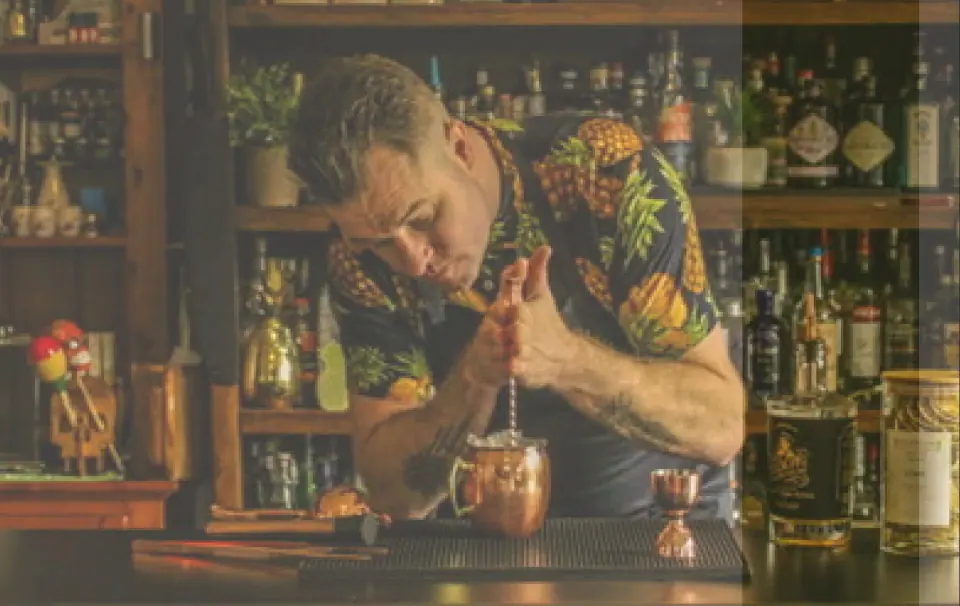
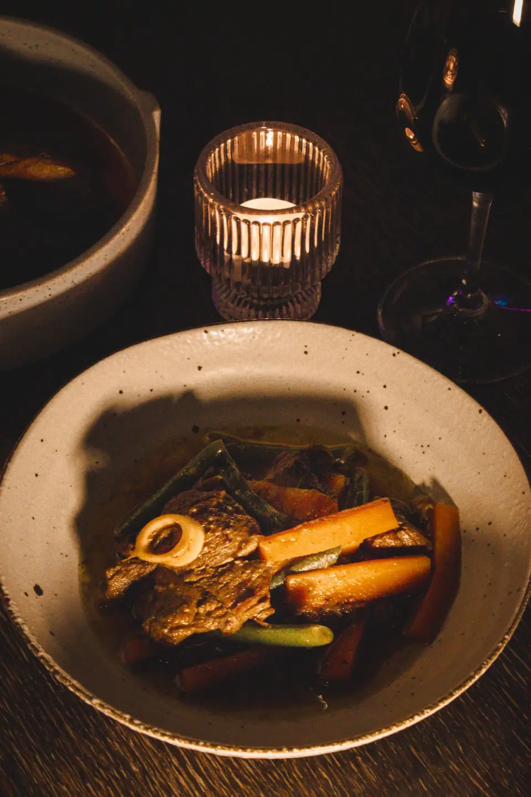

Ethiopian restaurant · Fitzroy, Melbourne
Traditional cooking, from back home
Traditional Ethiopian cooking, brought from back home to Melbourne.
- Now
- HoursThu to Sun 5:30pm–9pm
Mon to Wed closed - Address328 Brunswick Street, Fitzroy, VIC, 3065
- Phone0420604939
Doro wat
Doro wat is the national dish: slow-cooked chicken made with berbere chilli powder and Spanish onion, seasoned with clarified butter infused with herbs and spices.
Most of our veggie dishes are cooked with onions slowly caramelised in olive oil. Garlic and ginger are a must.

Gallery
A look inside


Fitzroy
On Brunswick Street, Fitzroy
| Monday | Closed |
|---|---|
| Tuesday | Closed |
| Wednesday | Closed |
| Thursday | 5:30pm–9pm |
| Friday | 5:30pm–9pm |
| Saturday | 5:30pm–9pm |
| Sunday | 5:30pm–9pm |
- Private functions for up to 30 guests, with halal, vegan, vegetarian and gluten free options.
